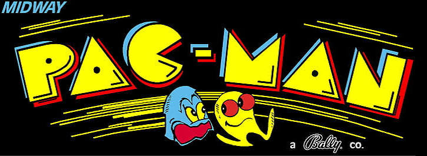

THE ARCADE SOUND
A compact, bright electronic melody became an instantly recognizable invitation to play. Its playful pulse is inseparable from the glowing maze and the chase through it.
Game: Pac-Man
Composer: Toshio Kai
Style: Chiptune